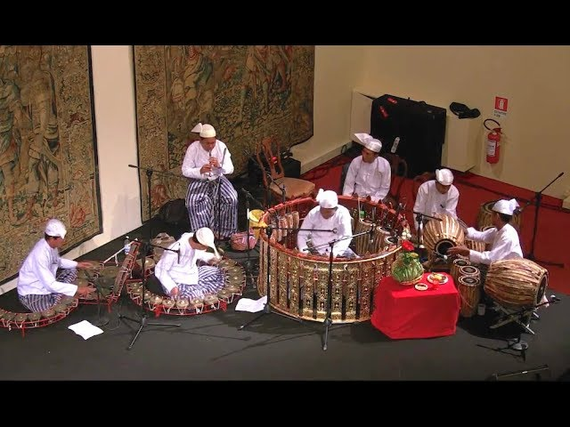

The Hsaing Waing
The Hsaing Waing is a traditional Burmese musical ensemble. It is unique in the world, consisting mainly of various drums and gongs, accompanied by the Hne (oboe).
For centuries, this music has been the heartbeat of Myanmar's festivals, theater, and royal ceremonies.
